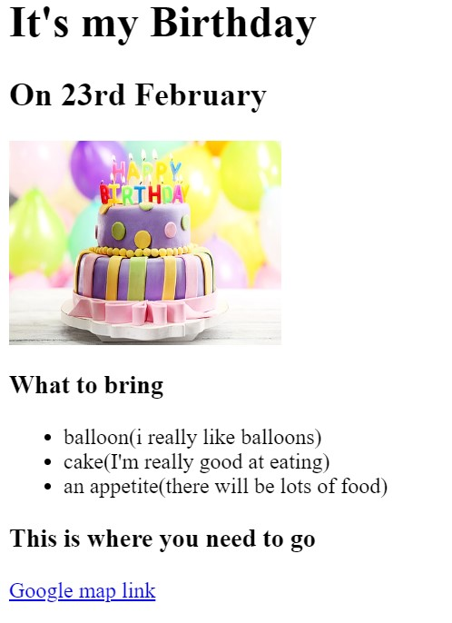

<!-- TODO 1: Create the HTML Boilerplate -->

<!-- TODO 2: Add Your previous projects' HTML into the public folder -->

<!-- TODO 3: Take screenshots of your project previews and add the images to the images folder -->

<!-- TODO 4: Add titles/subtitles etc. -->

<!-- TODO 5: Add a link to the project pages -->

<!-- TODO 6: Add images to show the project previews
HINT for TODO 6: You can use the height attribute set to 200 to make the image smaller:
https://developer.mozilla.org/en-US/docs/Web/HTML/Element/img#attr-height -->

<!-- TODO 7: Add the Contact Me and About Me page links -->
<h1>Tanishka's portfolio</h1>
<h2>I'm a web developer</h2>
<hr>
<h2><a href = "http://127.0.0.1:3000/2.4 Movie Ranking Project/index.html">Movie ranking project</a></h2>
<br>

<h2><a href = "http://127.0.0.1:3000/3.4 Birthday Invite Project/index.html">Birthday invitation project</a></h2>
<br>

<hr>
<a href ="http://127.0.0.1:3000/public/about.html">About me </a>
<a href = "http://127.0.0.1:3000/public/contact.html">Contact me</a>